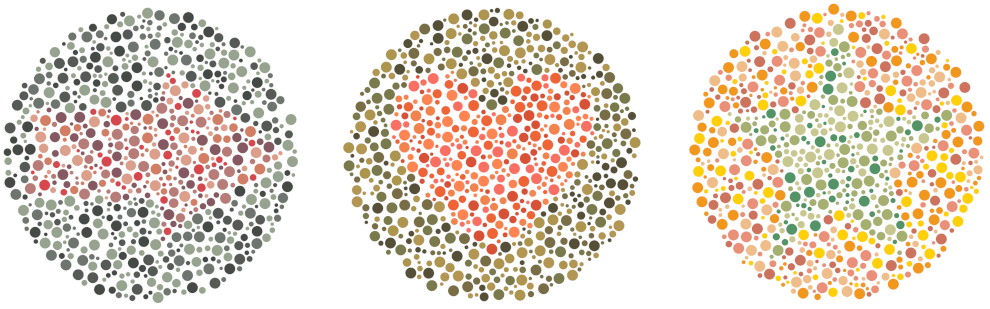
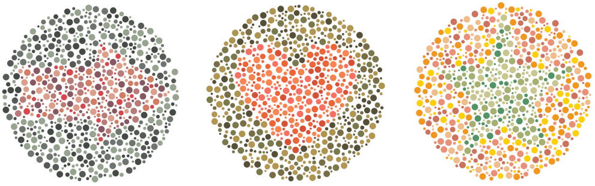
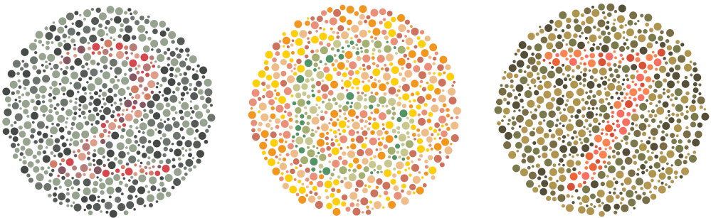
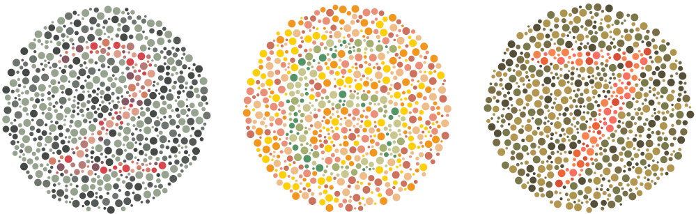
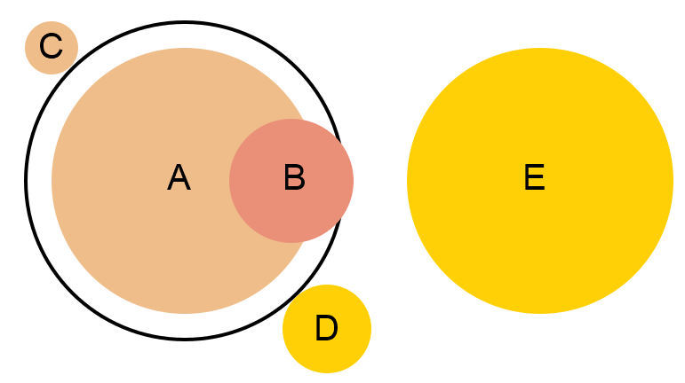
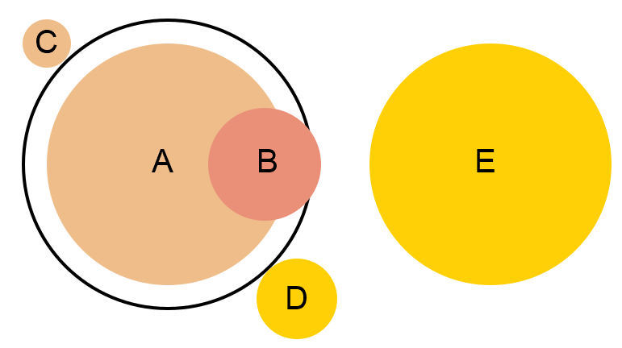
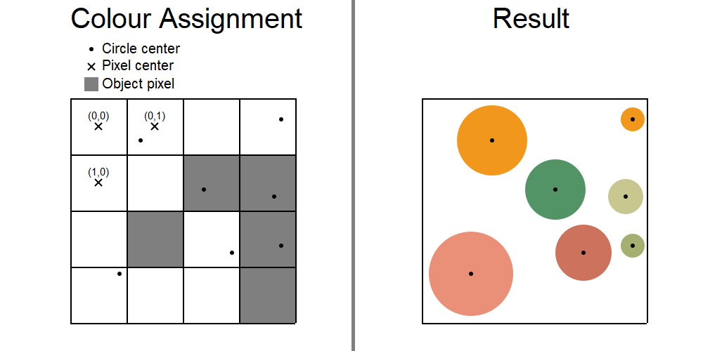
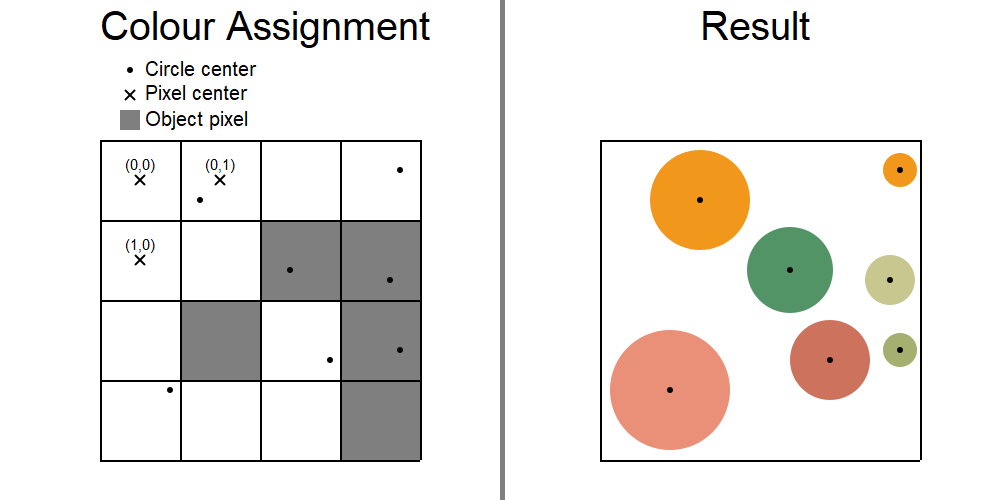
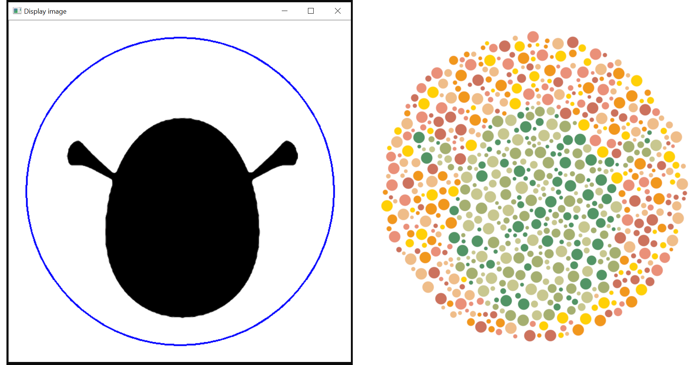
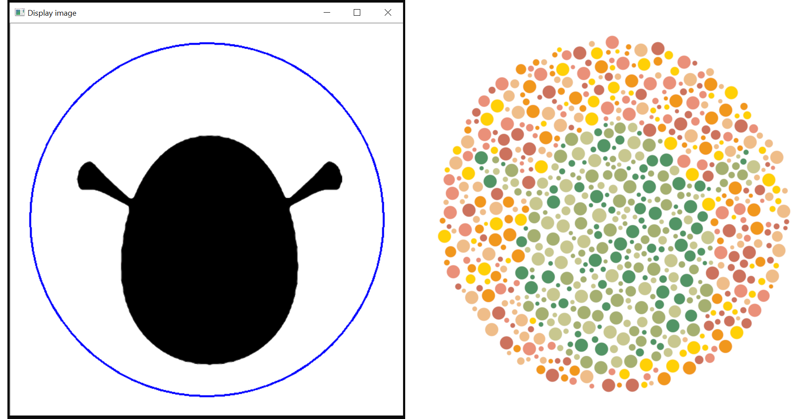

General Colorblind Test Creation
Overview
I sought to create a Python program that can create colorblind test discs with general objects inside of them.
The finished program produced the images seen below of discs with an arrow, a heart and a star inside.
The code can be found on github.

If this project seems interesting then continue reading to get an overview of how the program works and thoughts that occurred to me while coding it all.

If this project seems interesting then continue reading to get an overview of how the program works and thoughts that occurred to me while coding it all.
Introduction
Most of us have seen the brightly colored discs with numbers hidden inside, created to discover if your vision has any issues with processing colors. These are known as Ishihara discs. A few examples of such discs can be seen below.

There are actually a few different variants of these discs with slightly different purposes and goals. Wikipedia contains info on the different designs and an excerpt of this is as follows:
(Note: If you are wondering if your child has any issues with their vision, seek to get this properly investigated by a certified medical examiner. This project is mostly for fun while still having a useful application in mind.)

There are actually a few different variants of these discs with slightly different purposes and goals. Wikipedia contains info on the different designs and an excerpt of this is as follows:
- Demonstration plate (plate number one, typically the numeral "12"); designed to be visible by all persons, whether normal or color vision deficient. For demonstration purposes only, and usually not considered in making a score for screening purposes.
- Transformation plates: individuals with color vision defect should see a different figure from individuals with normal color vision.
- Vanishing plates: only individuals with normal color vision could recognize the figure.
(Note: If you are wondering if your child has any issues with their vision, seek to get this properly investigated by a certified medical examiner. This project is mostly for fun while still having a useful application in mind.)
Coding
While the full program can be found on github, I will detail a few of the key details of my implementation to give an overview of how it is done. The discs are generated with the Python module PyCairo which allows for vector graphics to be created in Python.
Generating a disc
The key question is probably how the discs themselves are actually created. An issue is that for a typical disc, there are numerous non-overlapping smaller circles contained within it. The circles vary in size and there is some spacing between each of them. Before tackling this problem and actually getting down to writing the code, I had a few ideas in mind. Some examples of these are
The generation process can be described as follows

- Randomize circle positions in the large disc and out the small circles at each randomly generated position.
- Add an intial circle and then add another circle tangenting to the last generated circle.
- Work from a base pattern and apply slight perturbations to create the impression of a completely novel circle.
The generation process can be described as follows
- Randomize a new circle position by choosing a random angle in [0, \(2\pi\)] and a radius between 0 and the chosen max-radius. The max-radius is the size of the Ishihara disc.
- To prevent overlap, for each newly generated circle calculate the distance to previously generated circles and obtain their radii.
- If the distance to the closest point is such that we can fit a circle with a radius larger than the minimum allowed at this position with no overlap and a small spacing inbetween the circles, add a circle and repeat the process
- Stop the process when enough circles have been generated (for my code it is 720).

- Assume circle A has been generated in a previous step. Given that circle A is the closest neighbouring circle to a newly proposed circle position, we want to see which circles around A that can be put on the canvas. The black outline around circle A is the required spacing around that circle. No circles are allowed to either overlap circle A or the spacing around A.
- Circle B and circle C will not be added to the canvas. This is since circle B is overlapping a previously generated circle and circle B is currently below the minimum allowed circle size and cannot increase in size further without overlapping the spacing around A. If a given circle is overlapping or not can easily be calculated by calculating the distance between the circles center by the Pythagorean theorem.
- Circle D and circle E will be added to the canvas. Circle D will be smaller than the maximal allowed size due to the spacing around A. Circle E is a circle of maximal size since it sufficiently far away from A.
Coloring the object
Now we seek to understand how we can add the "hidden" object inside of the created disc from the previous step. The way I did it was as follows

Note that it is possible to use more complicated schemes to associate a circle with the object. An easy extension could be to check the color of each neighbouring pixel in addition to the closest one, this will have the benefit of not being affected if the object image contains some small noise. By following these steps, we see that we can color the hidden object differently from the foreground in the Ishihara disc.
- The user can load a given image containing the object (ideally a binary image).
- The circle positions in the Ishihara disc are converted to the same scale as the loaded image, then rounded to the nearest pixel center.
- If the obtained pixel belongs to the object, color the circle with a foreground color, otherwise use a background color.

Note that it is possible to use more complicated schemes to associate a circle with the object. An easy extension could be to check the color of each neighbouring pixel in addition to the closest one, this will have the benefit of not being affected if the object image contains some small noise. By following these steps, we see that we can color the hidden object differently from the foreground in the Ishihara disc.
Allowing the user to modify the object
One issue that I became aware of as I coded the program is that it can be difficult to create a good object image and to know how the final Ishihara disc will look like. The object might end up too small in the disc, off center, rotated etc. Thus I felt some user control was needed to be able to modify the object and see its relation with the disc before the disc is created. I did not seek to create anything complicated but instead opted for a basic solution where the use can rotate, increase/decrease and translate the object and see its position with regards to the disc. All of this was done with the OpenCV module in Python. An illustration of how this process helps facilitate the creation process can be seen below. The left image shows the display window meant to help the user get an idea of where the resulting object will be in the disc. The right image shows the final resulting Ishihara disc.

While we can see here that the recreation is not perfect, this can be due to the fact that the circular representation is not as fine-grained as representing the object on a pixel level. Thus there will be some discrepancies between the two images.

While we can see here that the recreation is not perfect, this can be due to the fact that the circular representation is not as fine-grained as representing the object on a pixel level. Thus there will be some discrepancies between the two images.
Final thoughts
Overall it was an interesting but short project.
While some improvements to the program can be made
(e.g, a better user interaction, more colors to choose from, better choice of circle sizes,
more Ishihara test types etc), for a minor project, I am more than satisfied with the result.